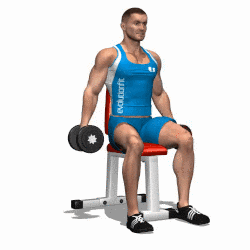
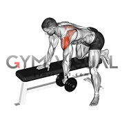

Lateral Raise
1.Stand with your feet shoulder-width apart, facing the dumbbell with your arms fully extended and holding the dumbbell handles in each hand.
2. Keeping your arms straight and your core engaged, raise your arms up and out to the sides, leading with your elbows, until they are in line with your shoulders.
3. Slowly lower the handles back down to the starting position, and repeat for your desired number of repetitions.

Rear Delt Fly
1. Stand facing away from the dumbbell and grasp the handles with your arms extended straight in front of you, palms facing in.
2. Keeping your arms straight and your torso stationary, lift the handles up and out to the sides until your arms are parallel to the floor and in line with your shoulders.
3. Slowly lower the handles back to the starting position, keeping your arms straight and your torso stationary, and repeat for the desired number of reps.
